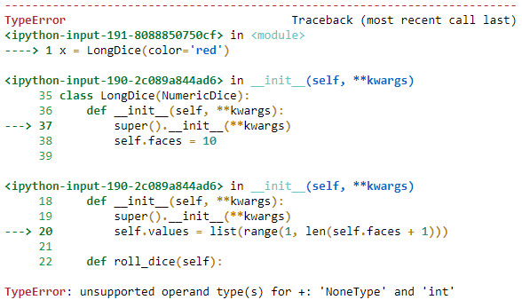

בבנייה של המחלקות בתרגיל, בניתי מחלקת אבסטרקט Dice שממנה יוצאות 2 מחלקות קובייה מספרית וקובייה לא מאוזנת, בדיוק כמו שביקשו בתרגיל.
הבעיה שלי היא בשרשרת של קובייה מספרית, כאמור לכל קובייה:
לכל קובייה יש צבע, מספר פאות וערכים שמופיעים על הפאות.
הטלה של קובייה תבחר באופן אקראי ערך מאחת מפאות הקובייה ותחזיר אותה.
ולכל קובייה מספרית:
על כל פאה של “קובייה מספרית” מופיע מספר שערכו בין 1 למספר הפאות בקובייה. כל מספר יופיע פעם אחת בלבד על הקובייה.
הבעיה שלי נובעת בניסיון ליצירת מופע של קוביית אורך, בקריאה ל- init.
ב init של קובייה מספרית, הערך values מוגדר בתור רשימה של כל מס’ מ1 עד מס’ הפאות, בדיוק כמו שביקשו מאיתנו.
רק כיוון שבשלב הזה הפאות עדיין לא קיימות הן מוגדרות עדיין כ- None, המטרה שלי היא שהפעולה תישאר אותו דבר בקוביית אורך ורק תושפע מהערך faces שהשתנה.
אז מצד אחד אומרים לנו בשלב של קובייה מספרית שהערכים מסודרים מ1 עד מס’ הפאות, אבל כשאני מנסה להריץ כמו בסדר שהסברתי, אני מקבל את ההתראה הבאה: (*מקווה שלא חושף יותר מדי).

ולכן השאלה שלי בנוגע לפעולות כאלו, כיוון שמצב דומה קיים בפונקציית האב Dice בפעולה roll_dice,
פרטי הפעולה נתונים לנו בשלב מעל לשלב שבו מתקבלים הערכים, אז איך אני אמור להכניס את יצירת הערך values במקרה הזה, ליצור פונקציה שתדע לייצר אותו ולתת לה לרדת בשרשרת ההיררכיה? כי אם אתעלם מהפעולה תחת קובייה מספרית, אם בעתיד מישהו אחר ירצה ליצור מופע שמתבסס על קובייה מספרית הוא לא יקבל את הערך values.
מקווה שהצלחתי להסביר את עצמי…